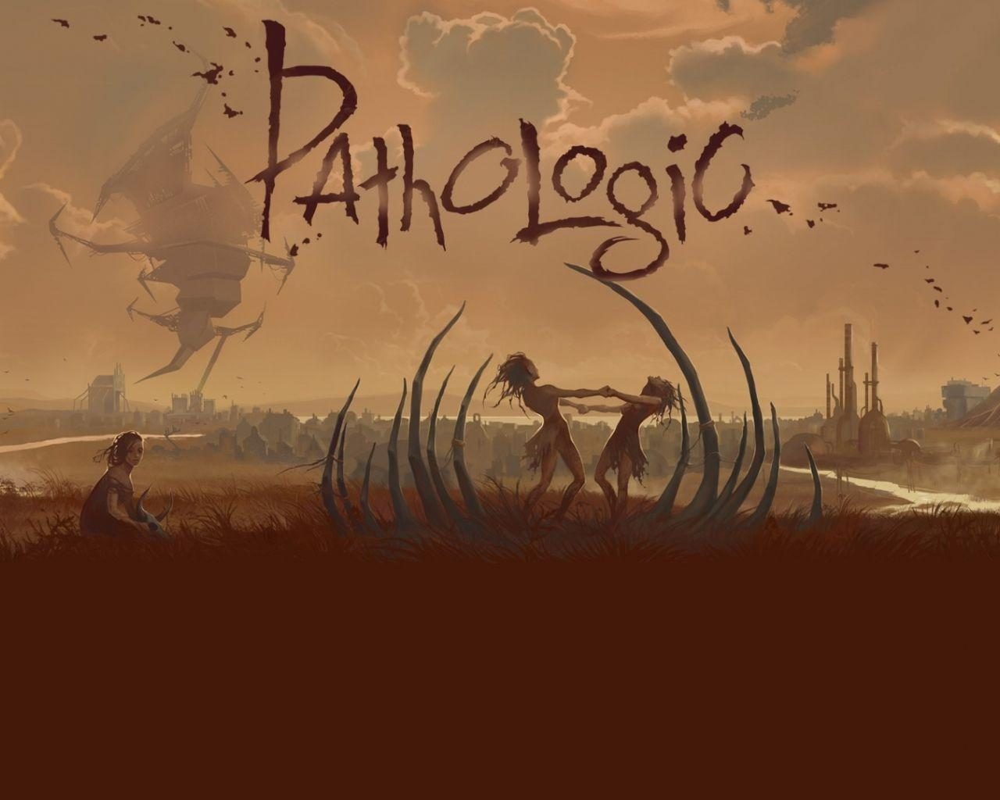

Utopia · Sacrifício · Memória Coletiva · O Absurdo
Pathologic 2 não pergunta apenas "o que você faria". Ele pergunta o que significa fazer qualquer coisa quando o tempo é finito, os recursos são insuficientes e o sistema que rege o mundo é indiferente ao seu esforço. A Ice-Pick Lodge construiu, sob a superfície de um survival horror, uma obra que dialoga abertamente com tradições filosóficas e literárias russas e europeias — do absurdo de Camus ao niilismo de Dostoiévski, passando por questões sobre utopia, sacrifício e o que resta da identidade quando a comunidade se desfaz.
Esta página não cobre mecânicas. Cobre significado — o que o jogo está, de fato, tentando dizer através de seus sistemas punitivos, sua recusa em confortar e sua insistência em mostrar consequências sem redenção fácil.
"Vivemos numa terra que cobra um preço por tudo. Inclusive por respirar."
— Personagem não identificado, Pathologic 2A Cidade-no-Gorkhon é, em sua origem narrativa, um projeto de organização social: uma comunidade isolada governada por famílias fundadoras que tentaram construir algo coeso a partir das estepes russas. Mas Pathologic 2 trata essa fundação com profunda desconfiança. Toda estrutura de poder na Cidade — a Câmara, o Quartel, os Adherentes — revela rachaduras assim que a crise chega. Não há sistema que sobreviva intacto ao contato com a Praga.
O jogo sugere que toda utopia carrega, em sua própria arquitetura, a semente de seu colapso. A ordem que a Cidade tenta impor — hierarquias raciais, religiosas e econômicas mal disfarçadas de tradição — não é resiliência, é fragilidade disfarçada de permanência. Quando a Praga chega, essas estruturas não protegem ninguém: apenas determinam quem morre primeiro.
A escolha de tornar Artemy, Dankovsky e Clara figuras de fora do sistema de poder estabelecido — um herdeiro relutante, um cientista estrangeiro, uma presença quase mítica — não é acidental. São eles que, justamente por não pertencerem totalmente à hierarquia da Cidade, conseguem enxergar suas falhas estruturais com mais clareza do que os que vivem confortavelmente dentro dela.
Nenhum sistema de jogo expressa melhor a filosofia de Pathologic 2 do que sua estrutura de tempo finito. Doze dias, recursos escassos, múltiplos NPCs precisando de ajuda simultânea. O jogo recusa, de forma deliberada, qualquer possibilidade de salvar todos. Essa não é uma falha de design — é o argumento central da obra: toda ajuda dada é, simultaneamente, uma ajuda negada a outra pessoa.
Isso transforma cada decisão prática — usar um remédio raro, dedicar uma tarde a uma missão em vez de outra — em um ato moral com peso real. O jogo não pune apenas a inação; pune a ação também, porque toda ação tem custo de oportunidade. Não existe escolha neutra em um mundo de recursos finitos.
O mais perturbador é que o jogo não revela o "custo total" de uma escolha até muito depois — às vezes, dias depois, quando um personagem que você ignorou morre silenciosamente fora de tela. Essa demora entre causa e consequência reproduz, mecanicamente, uma verdade desconfortável sobre decisões éticas reais: raramente vemos o resultado completo do que escolhemos não fazer.
Artemy retorna à Cidade para enterrar o pai — mas o que ela encontra é uma comunidade inteira lutando para decidir o que fazer com sua própria herança cultural diante do colapso iminente. A Praga não ameaça apenas vidas individuais; ameaça apagar décadas de conhecimento, ritual e tradição acumulados pelas famílias fundadoras e pelos Adherentes do bloco dos Açougueiros.
O jogo trata memória como um recurso tão escasso quanto comida ou remédio. Os diários espalhados pela Cidade, os rituais dos Açougueiros, os segredos que Isidor Burakh levou consigo — tudo isso é conhecimento que pode se perder para sempre se ninguém sobreviver para transmiti-lo. Nesse sentido, salvar pessoas específicas não é apenas um ato de compaixão individual: é uma tentativa de preservar fragmentos de uma cultura inteira.
A figura do pai morto de Artemy funciona como símbolo dessa ruptura: o conhecimento de Isidor sobre a terra, sobre o Tauros, sobre a cura possível, está incompleto justamente porque ele morreu antes de transmiti-lo por completo. O jogador, jogando como o filho, é forçado a reconstruir esse conhecimento perdido sob pressão extrema de tempo — uma metáfora direta sobre como herança cultural frequentemente chega fragmentada às gerações seguintes.
Pathologic 2 é, em sua essência mecânica, um jogo que não pode ser vencido no sentido tradicional. Você pode terminar os doze dias, mas sempre com perdas — pessoas mortas, promessas quebradas, recursos que faltaram. O jogo recusa categoricamente o conceito de "final perfeito", e essa recusa é, ela mesma, uma declaração filosófica.
Essa estrutura ecoa diretamente o conceito do absurdo de Albert Camus: a tensão irresolvível entre o desejo humano por sentido e clareza, e um universo que se recusa a fornecer essas respostas. O Médico busca incessantemente uma cura, uma explicação, uma saída lógica — e o jogo, através de seus Arcanjos enigmáticos e sua narrativa fragmentada, sistematicamente nega clareza total ao jogador até o fim.
O teatro está presente também na própria estrutura formal do jogo — referências explícitas a peças, ao conceito de "Quarta Parede" e personagens que se dirigem diretamente ao jogador questionando sua própria existência como avatar dentro de uma simulação. Essa autoconsciência narrativa reforça a ideia de que jogar Pathologic 2 é, em si, um ato de confronto com o absurdo: você sabe que está dentro de um sistema construído, e mesmo assim, escolhe continuar jogando como se as escolhas importassem.
Cada um dos protagonistas jogáveis representa não apenas um estilo de jogo distinto, mas uma postura filosófica diferente diante da crise — três formas possíveis de responder ao mesmo problema absurdo.
"Não existe cura sem perda. A pergunta nunca foi se você vai perder algo — é o que você está disposto a perder."
— Pathologic 2"A Cidade não pede que você seja bom. Pede que você seja capaz de viver com o que escolheu."
— Pathologic 2"Toda tradição já foi, um dia, uma decisão tomada sob pressão — e depois esquecida como tal."
— Pathologic 2"Você quer salvar a Cidade. A Cidade só quer continuar existindo, do jeito que for, com quem sobrar."
— Pathologic 2Pathologic 2 não oferece conforto porque não acredita que conforto seja o que a situação pede. Acredita, em vez disso, que há valor em atravessar a dificuldade com os olhos abertos — em nomear cada escolha, em carregar cada perda, em continuar mesmo sem garantia de sentido final. Não é uma filosofia confortável. É, talvez por isso, uma das mais honestas já construídas dentro de um jogo.